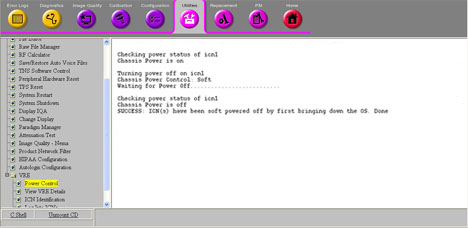
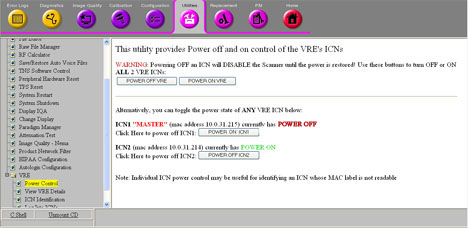

Illustration 5:
Getting Switched Off

Illustration 6:
ICN 1 Switched Off

NOTE:
The illustration above shows images from a system with a Sun 4100 ICN. Systems with a Sun 4170 ICN will only have one ICN selection.